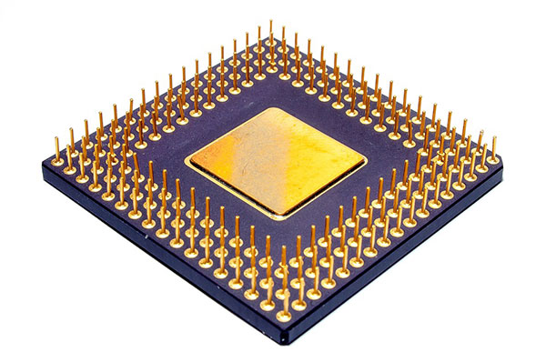
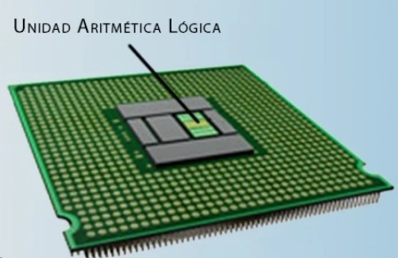
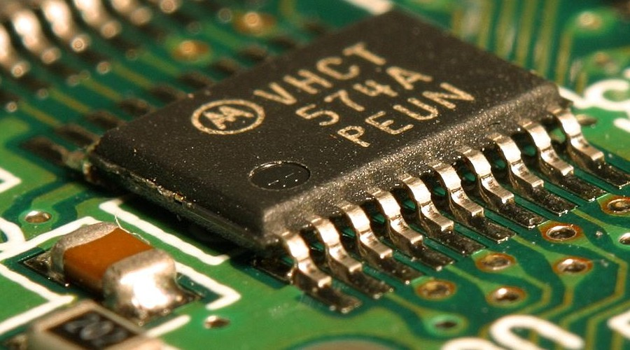
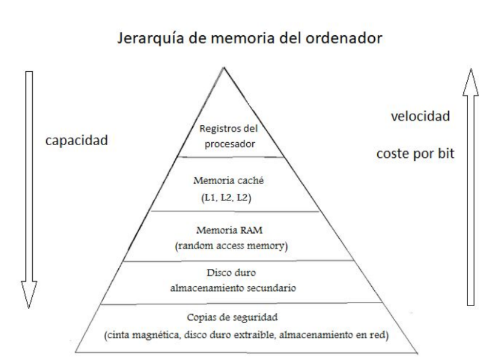
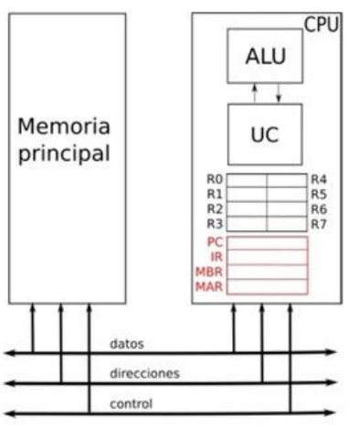
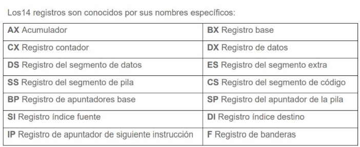
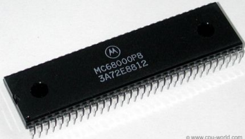
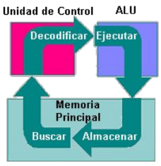
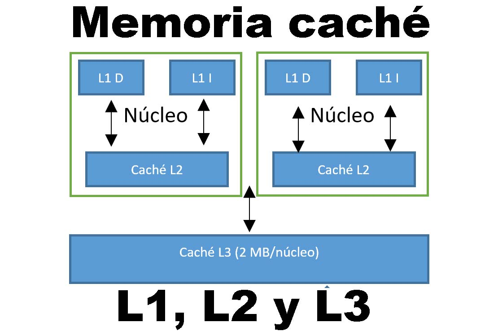

REGRESAR A LA PAGINA PRINCIPAL

La Unidad de Procesamiento (CPU) controla el funcionamiento del computador y lleva a cabo sus funciones de procesamiento de datos. Frecuentemente se le llama procesador. Un procesador, incluye tanto registros visibles por el usuario como registros de control/estado. Los registros visibles por el usuario pueden ser de uso general o tener una utilidad especial
Lleva a cabo una gran variedad de:
-Calculos
-Comparaciones numericas
-Transferencias de datos como respuesta a las peticiones de los programas que están siendo ejecutados en memoria.
La CPU controla las operaciones básicas del ordenador enviando y recibiendo señales de control, direcciones de memoria y datos de un lugar a otro de la computadora a través de un grupo de canales llamados BUS.
La Unidad Central de Proceso está constituida internamente por:
-La Unidad de Control
-Unidad Aritmético-Lógica
Unidad Aritmético-Lógica (ALU)
Recibe los datos sobre los que efectúa operaciones de cálculo y comparaciones. Toma decisiones lógicas (determina si una afirmación es correcta o falsa mediante reglas del algebra de Boole) y devuelve luego el resultado. Todo ello bajo supervisión de la unidad de control.

La Unidad de Control
La unidad de control le indica al resto del sistema como llevar a cabo las instrucciones de un programa. Comanda las señales electrónicas entre la memoria y la unidad aritmético-lógica, y entre el CPU y los dispositivos de entrada y salida. Para ejecutar cualquier programa, cada comando del mismo se desglosa en instrucciones.

¿Que es un registro?
Un registro es una memoria que está ubicada en el procesador y se encuentra en el nivel más alto en la jerarquía de memoria, por lo tanto tiene una alta velocidad pero con poca capacidad para almacenar datos que va desde los 4 bits hasta los 64 bits dependiendo del procesador que se utilice. Los datos que almacena son los que se usan frecuentemente.
La estructura de registros en una CPU se refiere a la colección de registros de almacenamiento de datos que se utilizan internamente para llevar a cabo diversas operaciones. Estos registros son esenciales para el funcionamiento de la CPU, ya que almacenan datos que se están procesando en un momento dado. La cantidad y tipos de registros pueden variar según la arquitectura de la CPU.

Los registros visibles para el usuario son un subconjunto de los registros en la CPU que son accesibles directamente por los programadores y se utilizan para almacenar datos temporales y resultados intermedios durante la ejecución de programas. Estos registros son visibles en el sentido de que los programadores pueden hacer referencia directa a ellos en su código. Los registros visibles para el usuario varían según la arquitectura de la CPU, pero algunos ejemplos comunes incluyen:
Registros de propósito general: Estos registros se utilizan para almacenar datos y realizar operaciones aritméticas y lógicas. Los programadores pueden especificar estos registros en sus programas para llevar a cabo tareas específicas.
Registros de índice: Utilizados para realizar operaciones de indexación en matrices u otras estructuras de datos. Ayudan a los programadores a acceder a elementos específicos en la memoria.
Registro de puntero de pila (SP): Los programadores pueden usar este registro para controlar y gestionar la pila de llamadas en programas que involucran funciones y subrutinas.
Registro de segmento de código y datos: En algunas arquitecturas, se utilizan registros para apuntar a segmentos específicos de memoria que contienen código ejecutable y datos.
Son utilizados por la unidad de control para controlar el funcionamiento del procesador y por programas privilegiados del sistema operativo, la mayor parte de estos registros no son visibles al usuario y algunos pueden ser accesibles a las instrucciones de máquina ejecutadas en un modo de control. Naturalmente, diferentes máquinas tendrán distinta organización de registros y usarán distinta terminología.

Contador de programa (Program Counter- PC):Contiene la dirección de la instrucción a buscar.
Registro de direcciones de memoria (MAR):El cual contiene la dirección en donde se efectuará la próxima lectura o escritura de datos. El número de direcciones depende del tamaño de la MAR.
Registro de datos de memoria (MBR):Contiene los datos que van a ser escritos en la memoria o los que fueron leídos en ella.
Registro de instrucciones (IR):Contiene la dirección de la siguiente instrucción que se va a ejecutar.
Registro de direcciones de entrada y salida (I/O AR):Especifica al dispositivo ya sea de entrada o salida
Registro de datos de entrada y salida (I/O BR):Es una área temporal en donde se lleva a cabo el intercambio de datos entre el procesador y el dispositivo de entrada y salida que esta especificado en IOAR.
Palabras de estado del programa (PSW):Contiene códigos de condición junto con otras informaciones de estado como el signo, acarro, desbordamiento, entre otras.
La CPU tiene 14 registros internos, cada uno de 16 bits. Los primeros cuatro, AX, BX, CX, y DX son registros de uso general y también pueden ser utilizados como registros de 8 bits

Motorola 68000:Está basado en dos bancos de 8 registros de 32 bits. Un banco es de datos (Dn) y el otro de punteros (An). Además contiene un contador de programa de 32 bits y un registro de estado de 16 bits. Los registros de datos (D0 a D7) se pueden usar como registros de 32 bits (.l), 16 bits (.w) y 8 bits (.b). Cualquiera de ellos puede usarse como acumulador, índice o puntero.

El ciclo de instrucción es un término más general que se refiere al proceso completo que sigue una CPU para ejecutar un programa. Este proceso se divide en varias etapas fundamentales que se repiten continuamente mientras la computadora está en funcionamiento.
1. Fetch: La CPU busca la siguiente instrucción en la memoria y la carga en el registro de instrucción.
2. Decode: La CPU realiza la operación especificada por la instrucción utilizando los operandos y obtiene un resultado.
3. Execute: La CPU decodifica la instrucción para entender qué operación realizar y qué operandos se requieren.
4. Write Back (Opciconal) En esta etapa, los resultados de la operación se escriben de nuevo en la ubicación correspondiente.

La segmentación de instrucciones Es una técnica que permite implementar el paralelismo a nivel de instrucción en un único procesador.
La segmentación intenta tener ocupadas con instrucciones todas las partes del procesador dividiendo las instrucciones en una serie de pasos secuenciales que efectuarán distintas unidades de la CPU, tratando en paralelo diferentes partes de las instrucciones
LA SEGMENTACIÓN RISC CLÁSICA COMPRENDE:
-Lectura de Instrucción
-Decodificación de instrucción y lectura de registro
-Ejecución
-Acceso a memoria
-Escritura de vuelta en el registro
Los conjuntos de instrucciones de las máquinas deben tender a poseer una serie de propiedades, bastante ideales e imprecisas, que pueden resumirse en las siguientes:
El conjunto de instrucciones de un computador debe ser completo en el sentido de que se pueda construir un programa para evaluar una función computable usando una cantidad de memoria razonable y empleando un tiempo moderado, es decir, el número de instrucciones de ese programa no debe ser demasiado elevado
I-8086: Los registros del procesador, se usan para contener los datos con que se está trabajando puesto que el acceso a los registros es mucho más rápido que los accesos a memoria. Se pueden realizar operaciones aritméticas y lógicas, comparaciones, entre otras. Los modos del 8086 son indirectos por registro, indexados o directos por registro.
Motorola 68000:El mismo direccionamiento lleva implícito el tipo de registro sobre el que trabaja (direcciones o datos). Está basado en dos bancos de 8 registros de 32 bits. Un banco es de datos (Dn) y el otro de punteros (An). Además contiene un contador de programa de 32 bits y un registro de estado de 16 bits.
80386:Para este microprocesador existe un modo nuevo que requiere un byte adicional denominado SIB (escala, índice, base) que se añade al byte de operandos, es útil para direccionar elementos de vectores de longitudes diferentes en bucles. Es una alternativa a los modos auto indexados que esta máquina no soporta.
Modos de Direccionamiento.
1.-Direccionamiento por registro:donde los operandos son registros. Los datos a operar están contenidos en dos registros de 32 bits y el resultado será colocado en otro registro, del mismo tamaño.
2.- Direccionamiento base o desplazamiento:Donde uno de los operandos está en una localidad de memoria cuya dirección es la suma de un registro y una constante que forma parte de la misma instrucción.
3.- Direccionamiento inmediato:Donde uno de los operandos es una constante que está en la misma instrucción.
4.- Direccionamiento relativo al PC:donde se forma una dirección sumando una constante, que está en la instrucción, con el registro PC. El resultado de la suma corresponde a la dirección destino si un brinco condicional se va a realizar.
5.- Direccionamiento pseudo directo:donde la dirección destino de un salto corresponde a la concentración de 26 bits que están en la misma instrucción con los bits más significativos del PC.
Niveles de Caché
Se suele dividir en 4 niveles de implementación : L1,L2,L3,L4. Cuanto inferior sea el nivel, más rápida y menor capacidad tendrá. Cada una de estos niveles está destinado a almacenar un tipo de información según su frecuencia, utilización y su importancia.
Por ejemplo, la caché L1 de procesadores típicos del 2020 (como el Intel Core i7-10700K) es de tan solo 64 KB por núcleo y tiene una velocidad típica de más de 1100 GBps y latencias de menos de 1 ns. Al llegar a la caché L3 de este mismo procesador encontramos un tamaño de 16 MB (compartida por todos los núcleos) y una velocidad de unos 200 GBps con latencias de más de 10 ns. La caché CPU L2 quedaría entre medias de estas dos.
